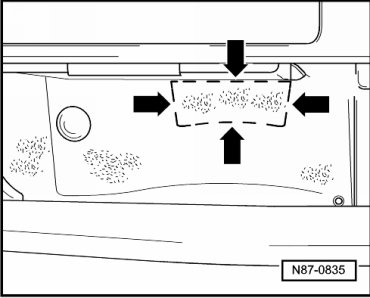
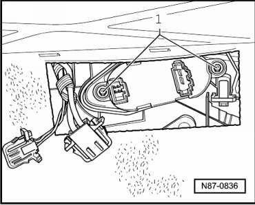

Front Blower Regulation Sensor
Front Blower Regulation Sensor
Removing
- Open glove box.
On first repair:
- Cut out pre-stamped area - arrows - with a knife.

• The blade length should not exceed 15 mm, to prevent damage to the cables located behind.
- On second repair, unclip cover
- Disconnect connector.
- Remove bolts - 1 -.

CAUTION!
Contact with a hot exhaust system can cause severe burns.
The Front Blower Regulation Sensor (Bitron) may be hot.
Allow Front Blower Regulation Sensor (Bitron) to cool before removing.
- Remove blower regulation sensor.
Installing
Installation is performed in reverse order of removal, but observe the following during the first repair
- Seal opening in glove compartment with a Door (7L6 820 239)